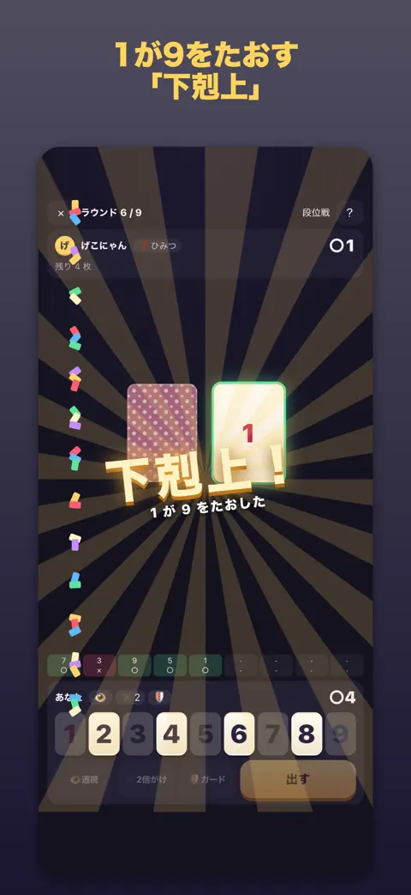
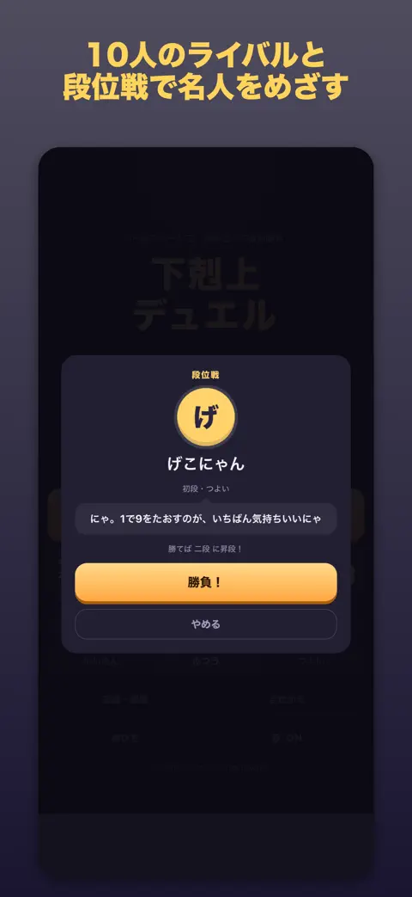
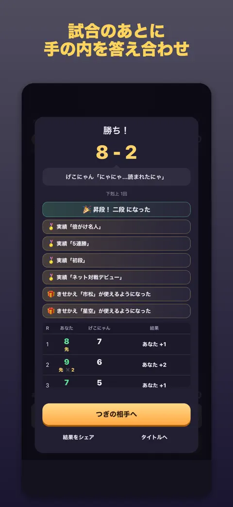
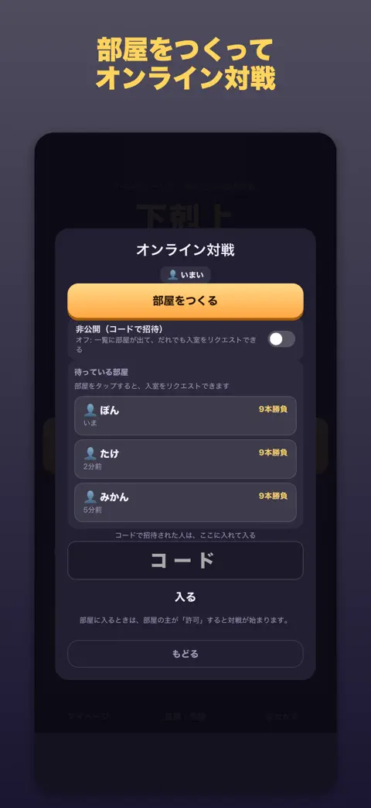

数字カードの読み合い対戦（iPhone）
下剋上デュエル
大きいほうが勝ち。
でも、1だけは9に勝てる。
1〜9の数字カードを1枚ずつ伏せて出し合う、2人用の読み合いカードゲーム。9をいつ出すか、1をとっておいて相手の9を待つか。CPU・2人で1台・オンライン対戦で遊べます。
App Store で無料ダウンロード無料・広告あり／iPhone（iOS 18 以降）





友達と、オンラインで読み合い勝負
- 登録・ログイン不要部屋をつくって、入室リクエストを「許可」すると対戦スタート。非公開の部屋は5文字のコードで招待。
- 2人で1台も1台の iPhone を交代で。手札が見えないよう、毎ラウンド交代画面をはさみます。
- 段位戦で名人へ10級の「たまご」から名人まで、クセのちがう10人のライバルに1人ずつ挑戦。
試合のあとは、どのラウンドで何を出したかを、ふり返りの表で全部確認できます。
こんな人におすすめ
- 短い時間で、頭をつかう対戦がしたい人
- 友達や家族と、かんたんなルールで盛り上がりたい人
- 相手の手を読むのが好きな人
遊び方は3ステップ
- 伏せて出す2人とも1〜9のカードを持ち、毎ラウンド1枚ずつ伏せて出します。
- くらべる大きい数字のほうが1点。ただし「1」は「9」に勝ちます（下剋上！）。
- 9ラウンド点数の多いほうが勝ち。特殊カード（透視・2倍がけ・ガード）は1試合に1回ずつ。
ルール
数字が大きいほうが勝ち
2人とも 1〜9 のカードを1枚ずつ出します。7 と 4 なら 7 の勝ち。同じ数字なら引き分け。
でも、1 は 9 に勝つ
いちばん弱い 1 が、いちばん強い 9 をたおす。これが下剋上！
相手の数字は見えない
使ったカードは戻らない。わかるのは勝ち負けだけ。相手の残りを読んで、どこで勝負するか決めよう。
特殊カード
透視（後手のとき先手の数字を見る）・2倍がけ（勝てば2点）・ガード（負けても引き分け）。どれも1試合に1回。
特徴
- 9ラウンドの読み合い使ったカードは戻らない
- 3種類の特殊カード透視・2倍がけ・ガード
- 10人のライバル10級の「たまご」から名人まで
- 14の実績ときせかえカードの裏やテーブルの色が増える
さいきんのアップデート
バージョン 1.0.8（2026年11月19日）
- タイトルの「音」のとなりに「振動」のオン・オフを入れました。オフにすると、ブルブルしなくなります
- オンライン対戦の名前に、使えない言葉のチェックを入れました。気になる名前は通報・非表示にできます
- マイページと遊び方に「お問い合わせ・サポートページ」を入れました
- 小さい画面で文字やボタンが切れていたところを直しました
- どの相手がむずかしいかを知るため、名前のない遊びの数だけを集めるようにしました（タイトルの「遊びの統計を送る」でオフにできます）
ことばの説明
- 下剋上
- いちばん弱い 1 が、いちばん強い 9 をたおすこと。下剋上デュエルの決まり。 くわしく
くわしい遊び方
2人とも1〜9のカードを1枚ずつ持ち、毎ラウンド1枚ずつ伏せて出します。大きい数字のほうが1点。ただし「1」だけは「9」に勝ちます（下剋上）。9ラウンドで点数の多いほうの勝ちです。
- 先手と後手：前のラウンドの勝者が先に伏せて出し、後手はそれを見てから出します
- 相手の数字は見えない：わかるのはラウンドの勝ち負けだけ。相手が特殊カードを使ったかどうかも、点数も、試合中はひみつ。試合が終わると全部ふり返れます
- 特殊カード（1試合に1回ずつ）：👁 透視（後手のとき、先手の数字を見る。2ラウンド目から）／✖️2 倍がけ（勝者は2点）／🛡 ガード（負けても引き分け）
- モード：段位戦（10人のライバルに勝って名人をめざす）／今日のお題／フリー対戦（3段階）／2人で1台／オンライン対戦（部屋コード・招待リンク・QRコードで友達と）
よくある質問
1が9に勝つカードゲームは？
下剋上デュエルは、1〜9 の数字カードを1枚ずつ伏せて出し、大きいほうが勝つ読み合いのゲームです。ただし 1 だけは 9 に勝ちます。CPU・2人で1台・オンライン対戦で遊べます。
無料ですか？
はい、無料でダウンロードして遊べます（広告あり）。App Store のページからどうぞ。
どの端末で使えますか？
iPhone（iOS 18 以降）で使えます。Android 版はありません。
オンライン対戦のやり方
1人が「オンライン」→「部屋を作る」を押すと、5文字のコードが出ます。もう1人が「オンライン」でそのコードを入れて「入る」を押すと始まります。登録やログインはいりません。
「部屋が見つかりませんでした」と出る
コードがまちがっているか、部屋を作った人がアプリを閉じた可能性があります。部屋を作った人の画面にコードが出たままになっているか確かめて、もう一度入ってください。
対戦中に相手の接続が切れた
30秒ほど待っても相手が戻らないときは、タイトルにもどります。電波のよいところで、もう一度部屋を作ってください。
試合をやめたい
対戦中に左上の ❚❚ を押すと、つづける・はじめから・タイトルへもどる を選べます。オンライン対戦では「対戦をやめて部屋を出る」になります。
音が出ない・止めたい
タイトル画面の「音」ボタンでオン・オフを切り替えられます。iPhone の音量も確かめてください。
成績を消したい
段位・実績・CPU との成績はこの iPhone の中にだけ保存しています。アプリを削除すると成績も消えます。
お問い合わせ
不具合やご要望は、メールでお知らせください。お使いの iPhone の機種と iOS のバージョンを書いていただけると助かります。